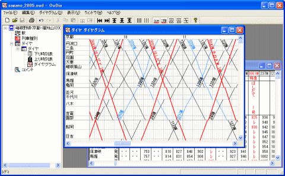

OuDia は、鉄道の時刻表データをもとに、ダイヤグラム(列車運行図表)を描画するプログラムです。
入力した時刻表データを、時刻表形式・ダイヤグラム形式で画面に表示することができます。また、プリンタで印刷することもできます。

OuDia以前から存在するダイヤグラム作成ソフトとして、WinDIA（作者：ふゆき
氏） があります。
OuDia は、 WinDIA で作成されたデータファイルを読み込んで表示することができます。また、
OuDia で作成したデータを、 WinDIA 形式のファイルで保存することもできます（一部、制限があります）。
時刻表から列車を入力する作業は、かなり手間のかかるものです。
OuDia では、この手間を軽減するために、いろいろな入力・編集の方法を用意しています（複数列車の切り取り・コピー・貼り付け・消去
、列車の駅時刻の繰上げ・繰下げ など）。
◎WinDIAは、こちらからダウンロードできます
http://www.vector.co.jp/soft/win31/home/se021682.html
OuDia(このソフトウエア)は、Win32アプリケーションです。Windows XP以降の日本語版Windowsで動作します。
現在、作者では以下のOS上での動作を確認しています。
このほか、ユーザーの方からは、Windows 8,Windows8.1 でも動作するとの情報をいただいています。